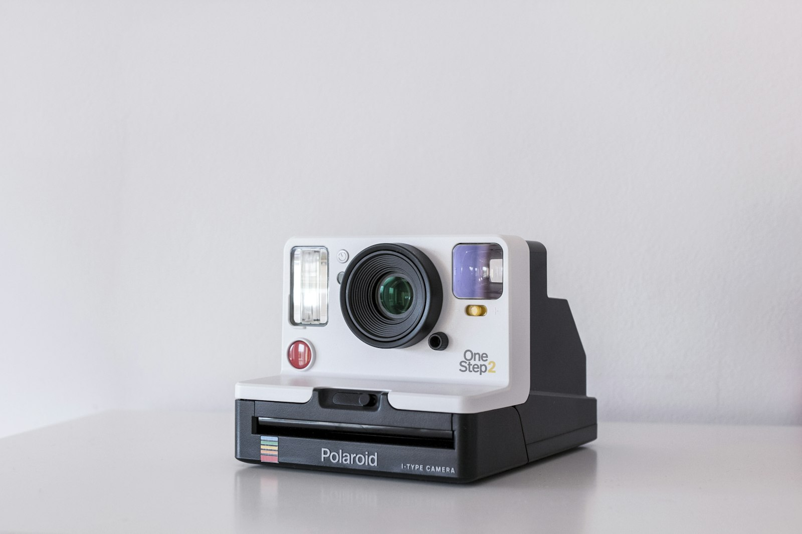

Etsy khác Amazon ở một điểm cốt lõi: khách đến đây để tìm món đồ không nơi nào khác có, handmade, vintage và cá nhân hóa. Với thế mạnh xưởng thêu/in in-house, seller Việt bước vào Etsy với đúng loại sản phẩm nền tảng này yêu thích. Đây là hướng dẫn mở gian hàng Etsy 2026 từ A–Z, gom toàn bộ kinh nghiệm thực chiến của chúng mình vào một bài.
01. Etsy là gì và ai nên bán ở đây?
Etsy là sàn thương mại điện tử chuyên về hàng thủ công, đồ vintage và nguyên liệu sáng tạo, với lượng người mua chủ lực đến từ Mỹ và châu Âu. Khác với tâm lý "săn giá rẻ" trên các sàn đại chúng, người mua Etsy sẵn sàng trả cao hơn cho món đồ có câu chuyện, đặc biệt là hàng cá nhân hóa theo tên, ngày kỷ niệm hay hình thú cưng.
Ai nên bán ở đây? Người có khả năng tạo sản phẩm riêng: thêu, in theo yêu cầu, đồ da, trang sức, file thiết kế số. Ai chưa phù hợp: người muốn bán lại hàng chợ có sẵn, Etsy cấm reselling hàng sản xuất đại trà không có yếu tố sáng tạo của người bán, và hệ thống kiểm duyệt ngày càng gắt. Nếu bạn theo mô hình Print-on-Demand đúng nghĩa (xem bài POD là gì), bạn thuộc nhóm được chào đón, miễn là khai báo đối tác sản xuất minh bạch.
02. Chuẩn bị trước khi mở shop
- Giấy tờ định danh hợp lệ và thông tin nhất quán, Etsy xác minh nghiêm ngặt seller quốc tế; sai lệch nhỏ giữa các giấy tờ cũng có thể khiến shop bị treo ngay tuần đầu.
- Tài khoản nhận thanh toán qua cổng được hỗ trợ tại Việt Nam (Payoneer liên kết Etsy Payments) đứng tên trùng với giấy tờ định danh.
- Chọn niche trước khi chọn tên shop: Etsy ưu ái shop có chủ đề nhất quán. Hãy hoàn thành bước nghiên cứu niche POD trước, mở shop rồi mới nghĩ bán gì là làm ngược quy trình.
- 10–20 mẫu sản phẩm sẵn sàng đăng ngay từ tuần đầu, shop lèo tèo 2 listing gần như vô hình với thuật toán.
- Bộ ảnh đạt chuẩn: mỗi listing cần tối thiểu 5–7 ảnh; chuẩn bị trước khi mở shop để không đăng vội ảnh xấu.
03. Setup shop từng bước
- Chọn tên shop dễ đọc, gợi niche, chưa ai dùng trên mạng xã hội, thương hiệu bắt đầu từ đây.
- Hoàn thiện banner, logo, About: kể câu chuyện xưởng của bạn kèm ảnh thật, mục About là công cụ tạo niềm tin mạnh nhất trên Etsy.
- Thiết lập chính sách đổi trả, thời gian xử lý (với hàng cá nhân hóa: ghi rõ 2–4 ngày sản xuất).
- Khai báo production partner nếu bạn dùng xưởng in/thêu, minh bạch ngay từ đầu để không bị quét về sau.
- Đăng loạt listing đầu tiên và bật Etsy Ads ngân sách nhỏ để lấy dữ liệu từ khóa thật.
04. SEO Etsy 2026: hệ thống chứ không phải mẹo vặt
Thuật toán Etsy ghép truy vấn của khách với title + tag + category + attribute, sau đó xếp hạng theo tỷ lệ click, chuyển đổi và uy tín shop. SEO Etsy vì thế là một hệ thống, làm tốt một mảnh mà bỏ mảnh khác thì listing vẫn chìm.
Title: viết cho khách trước, thuật toán sau
Mở đầu title bằng cụm từ khóa khách thật sự gõ ("Custom Pet Portrait Embroidered Sweatshirt"), theo sau là các biến thể tự nhiên. Đừng nhồi 140 ký tự toàn từ khóa ngăn cách bằng dấu phẩy, thuật toán hiện đánh giá cả trải nghiệm đọc, và khách nhìn title rối sẽ không click.
13 tag: dùng đủ, dùng khôn
Dùng đủ 13/13 tag, ưu tiên cụm dài 2–3 từ ("dog mom gift", "nurse graduation") thay vì từ đơn, và đừng lặp lại y nguyên cụm đã có trong title, mỗi tag là một cánh cửa truy vấn mới. Dành 2–3 tag cho dịp tặng quà (christmas gift, mothers day) vì người mua Etsy tìm theo dịp rất nhiều.
Category và attribute: đừng bỏ trống
Chọn category sâu nhất có thể và điền hết attribute (màu, chất liệu, dịp, người nhận). Attribute hoạt động như tag ẩn và là điều kiện để listing xuất hiện khi khách dùng bộ lọc, bỏ trống nghĩa là tự loại mình khỏi một nửa lượt tìm kiếm có chủ đích.
Ảnh và video listing: nơi quyết định cú click
SEO đưa listing lên trang kết quả, nhưng ảnh mới quyết định khách click vào ai. Công thức 7 ảnh phổ biến: ảnh chính nền sạch, ảnh lifestyle có người dùng thật, ảnh cận chất liệu, ảnh kích thước, ảnh các biến thể, ảnh đóng gói, ảnh review. Video 5–15 giây quay sản phẩm thật giúp tăng đáng kể độ tin cậy, với hàng thêu, cảnh máy chạy chỉ luôn là "bằng chứng handmade" thuyết phục nhất.

Etsy Ads cơ bản cho người mới
Tháng đầu, chạy Etsy Ads ngân sách nhỏ (1–3 USD/ngày) cho toàn bộ listing với mục tiêu mua dữ liệu, không phải mua đơn. Sau 30 ngày, vào Shop Stats: listing có view mà không có đơn là listing cần sửa ảnh hoặc giá, không phải sửa tag; từ khóa nào ra đơn thì đưa ngược vào title và tag của các listing khác. Tắt quảng cáo cho listing nhiều click không chuyển đổi để khỏi đốt tiền vô ích.
05. Định giá: đừng quên các lớp phí
Công thức giá bán tối thiểu = (chi phí sản xuất + vận chuyển + phí Etsy) ÷ (1 − biên lợi nhuận mong muốn). Cộng thêm khoảng 15% ngân sách marketing, bạn sẽ hiểu vì sao hàng cá nhân hóa (bán giá cao hơn 30–50% hàng thường) là lối chơi hợp lý nhất cho seller Việt. Bảng phí chi tiết:
| Loại phí | Mức phổ biến | Ghi chú |
|---|---|---|
| Phí đăng listing | $0.20 / listing | Hiệu lực 4 tháng hoặc đến khi bán; tự gia hạn nếu bật auto-renew. |
| Phí giao dịch | 6.5% giá trị đơn | Tính trên cả tiền hàng lẫn phí vận chuyển khách trả. |
| Phí thanh toán | ~3–4% + phí cố định | Qua Etsy Payments; thay đổi theo quốc gia tài khoản. |
| Offsite Ads | 12–15% / đơn | Chỉ thu khi đơn đến từ quảng cáo Etsy chạy ngoài sàn; bắt buộc với shop doanh số lớn. |
| Phí quy đổi tiền tệ | 2.5% | Phát sinh khi niêm yết khác đồng tiền tài khoản nhận. |
| Etsy Ads | Ngân sách tự đặt | Tùy chọn; nên coi là chi phí học dữ liệu trong giai đoạn đầu. |
Cộng dồn lại, tổng phí thường chiếm khoảng 10–15% doanh thu (chưa kể Offsite Ads). Định giá mà quên lớp phí nào là lợi nhuận "bốc hơi" lớp đó, hãy làm bảng tính trước khi đăng listing đầu tiên.
06. Vận chuyển quốc tế từ Việt Nam
Nỗi lo lớn nhất của seller Việt là ship, nhưng nó hoàn toàn quản trị được nếu khai báo trung thực ngay từ đầu. Ba con số khách nhìn thấy: processing time (thời gian sản xuất, với hàng cá nhân hóa nên ghi 2–4 ngày làm việc), thời gian vận chuyển và ngày nhận dự kiến Etsy tự tính từ hai số trên. Đặt dư một chút còn hơn hứa gấp rồi trễ: chỉ số giao đúng hạn là tín hiệu xếp hạng quan trọng.
- Tuyến nhanh (express): phổ biến 7–12 ngày làm việc tới Mỹ; phù hợp hàng giá trị cao và mùa lễ.
- Tuyến tiết kiệm: thường 2–4 tuần; chỉ dùng khi khách chấp nhận chờ và ngoài mùa cao điểm.
- Tracking đầy đủ là bắt buộc: đơn không có mã theo dõi gần như chắc chắn thua khi khách khiếu nại "chưa nhận hàng".
- Khai hải quan trung thực về loại hàng và giá trị, khai gian để né thuế là rủi ro không đáng đổi cả shop.
Mẹo mùa lễ: từ đầu tháng 11, chuyển toàn bộ sang tuyến nhanh và nới processing time thêm 1–2 ngày, đơn Giáng sinh trễ hẹn là nguồn review 1 sao lớn nhất trong năm của seller quốc tế.
07. Tháng đầu tiên nên làm gì?
- Tuần 1: hoàn thiện 100% hồ sơ shop, đăng 10–15 listing đầu với title/tag chuẩn, bật Etsy Ads ngân sách nhỏ, đặt mua 1–2 đơn mẫu của đối thủ để học trải nghiệm đóng gói.
- Tuần 2: đăng thêm 5–10 listing (thuật toán thích shop hoạt động đều), bắt đầu trả lời mọi tin nhắn trong vòng vài giờ, tốc độ phản hồi là điểm cộng xếp hạng và là lý do khách chọn bạn.
- Tuần 3: đọc Shop Stats lần đầu: từ khóa nào mang view, listing nào có click. Sửa ảnh chính cho nhóm "nhiều view ít click"; đừng đụng vào những gì đang chạy tốt.
- Tuần 4: tổng kết tháng, giữ lại hướng sản phẩm có tín hiệu, lên kế hoạch danh mục tháng sau theo chiều sâu niche, xin review từ những khách đầu tiên bằng thiệp cảm ơn nhỏ trong gói hàng.
Đừng kỳ vọng lợi nhuận trong 30 ngày đầu, mục tiêu đúng của tháng đầu là dữ liệu và những review 5 sao đầu tiên. Shop có 5–10 review chất lượng bước vào tháng thứ hai với vị thế hoàn toàn khác.
08. Những lỗi khiến shop "bay màu"
- Vi phạm bản quyền, dùng hình ảnh nhân vật, logo đội bóng, câu nói có trademark. Đây là lý do số 1 shop Việt bị khóa vĩnh viễn.
- Trễ hạn xử lý đơn hàng loạt, chỉ số ship đúng hạn tụt là thuật toán giảm phân phối ngay.
- Nhiều tài khoản trùng thông tin, Etsy quét rất gắt; một người một shop, làm tử tế.
- Tự thổi đơn, tự đánh giá, nhờ người quen mua ảo và để lại review là mẫu hành vi hệ thống nhận diện rất nhanh.
- Bỏ bê tin nhắn khiếu nại, khách mở case mà seller im lặng thì Etsy gần như luôn xử theo hướng bảo vệ người mua.
"Trên Etsy, shop thắng cuộc không phải shop rẻ nhất, mà là shop khiến khách cảm thấy món đồ được làm ra chỉ dành cho họ."
Đội ngũ E-commerce, Ethan EcomCâu hỏi thường gặp
Người Việt Nam có mở shop Etsy hợp pháp được không?
Được. Etsy chấp nhận seller từ Việt Nam với giấy tờ định danh hợp lệ và tài khoản nhận thanh toán qua cổng được hỗ trợ như Payoneer. Điều kiện tiên quyết là mọi thông tin phải nhất quán và trung thực, phần lớn trường hợp bị khóa ngay khi mở là do khai thông tin vay mượn.
Bán POD trên Etsy có bị coi là "không handmade" không?
Không, miễn là thiết kế do bạn tạo ra và bạn khai báo đối tác sản xuất (production partner) minh bạch. Etsy cấm bán lại hàng đại trà không có sáng tạo của người bán, chứ không cấm việc dùng xưởng in/thêu để hiện thực hóa thiết kế của chính bạn.
Bao lâu thì có đơn hàng đầu tiên?
Không có con số cam kết, phổ biến là trong vòng 2–8 tuần nếu shop có 15+ listing chuẩn SEO, ảnh tốt và giá hợp lý. Yếu tố rút ngắn thời gian nhiều nhất là chọn đúng niche có cầu và làm hàng cá nhân hóa; yếu tố kéo dài nhiều nhất là đăng ít listing rồi ngồi chờ.
Nên bắt đầu với bao nhiêu vốn?
Với mô hình POD, vốn khởi điểm chủ yếu nằm ở phí listing (vài chục nghìn đồng mỗi mẫu), ngân sách Etsy Ads nhỏ và chi phí làm 1–2 sản phẩm mẫu để chụp ảnh thật. Tổng vài triệu đồng là đủ chạy tháng thử nghiệm đầu tiên một cách nghiêm túc, rẻ hơn rất nhiều so với ôm hàng tồn kho.